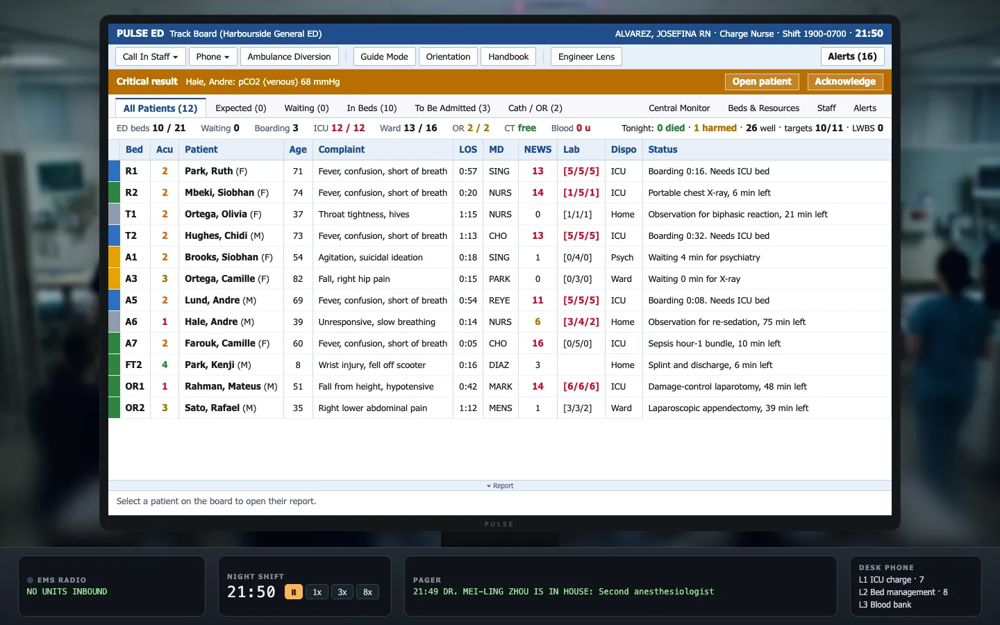

Nightboard
Start the shiftTwelve hours. Twenty-one beds.
Keep the line going.
01 · The board
This is your board.
Every patient in the building, on one screen. You never treat anyone. You decide who gets which bed, who goes first, and who gets called in from home.

RED NUMBERS
Someone is getting worse. Look at them first.
BOARDING
Done here, stuck waiting for a bed upstairs.
GUIDE MODE
Point at anything and it tells you what it means.
02 · Two rules
Why a hospital jams.
A care step starts only when everything it needs is free at the same moment.
A scan needs the scanner, a nurse to go with them and a bed to come back to. Two out of three is still waiting.
A patient keeps the place they are in until the next place is theirs.
Nobody waits in a corridor. So one full ward upstairs quietly fills your beds downstairs.
03 · Tonight
19:00 → 07:00
Twelve hours on the clock. Speed it up, slow it down, pause any time. The patients keep coming either way.
- Ambulance, chest pain. Call the cath team from home before they land.
- A stroke stuck behind a kidney stone in the queue for the scanner.
- A bus has crashed. Everyone comes to you.
- Handover. See who you kept moving.
Keep the
line going.
Free · In your browser · No sign-up